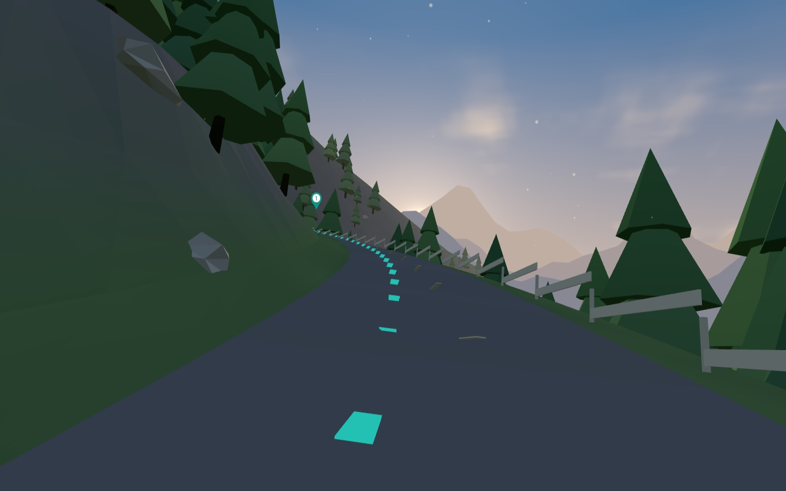
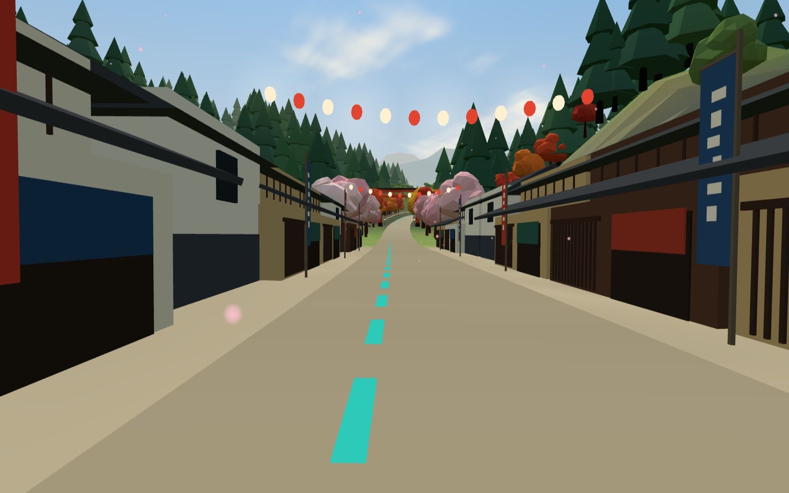
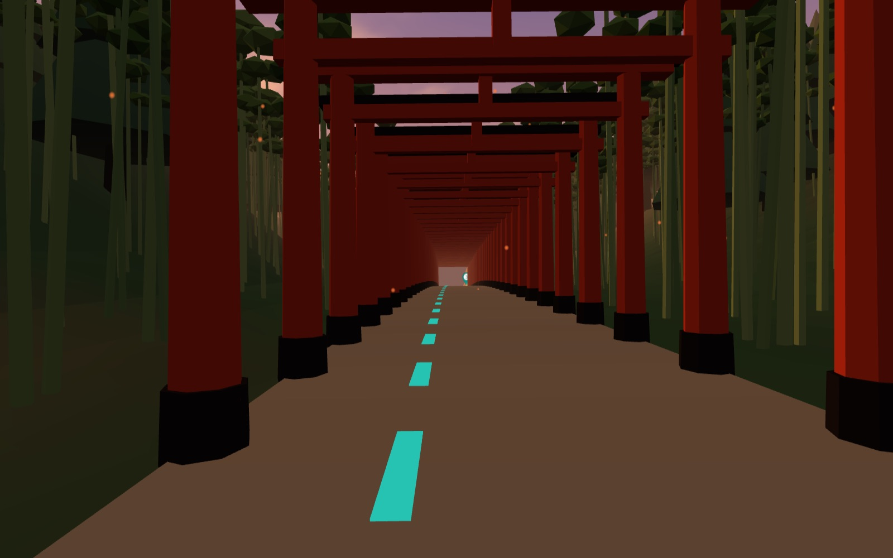
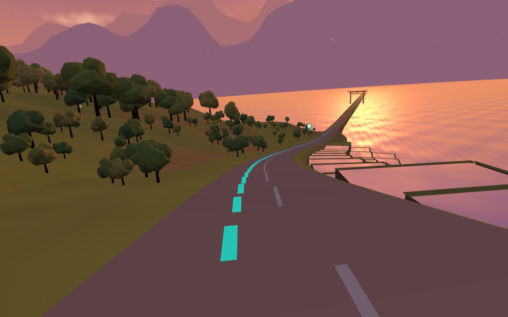
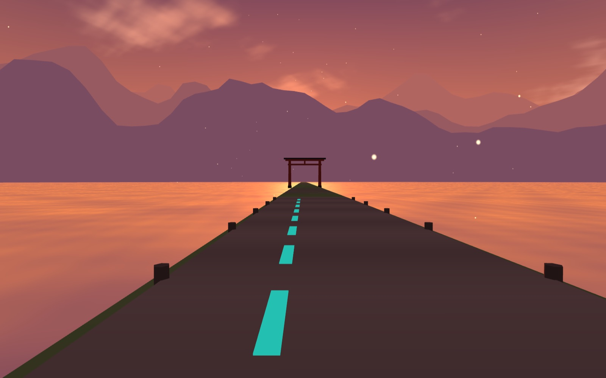

01 / 04
冒険
ADVENTURE
地図の余白へ、
漕ぎ出す。
コースを選べば、ナビがスポットを順番に案内。迷わないから、もっと遠くまで行ける。
AI CYCLING GUIDE
峠の風、古い町並み、千年の社、湖の夕日。
スマホひとつで、自転車の旅が物語に変わる。
スクロールで、ペダルを踏む
01 / 04
ADVENTURE
地図の余白へ、
漕ぎ出す。
コースを選べば、ナビがスポットを順番に案内。迷わないから、もっと遠くまで行ける。
02 / 04
DISCOVERY
近づくと、
町が語りだす。
スポットに入ると、解説音声がひとりでに流れる。スマホを取り出さなくても、物語が始まる。
03 / 04
TRADITION
千年の「なぜ」を、
その場で聞く。
気になったら、声や文字でAIガイドへ。地域の資料をもとに、ガイドのように答える。
04 / 04
NATURE
風の匂いまで、
旅の記憶に。
クイズに答えて特典を手に入れ、走った距離も訪れた場所も、記録に残す。
HISTORY × NATURE
峠と町と湖をめぐる
ひとめぐりコース
SPOT 2
古い町並み
音声ガイド
斜面に棚田がつくられてきた、いちばんの理由は？
正解！平らな土地が少ない山あいでは、斜面を段に分けて水をためることで、米づくりが続けられてきました。
特典コードを獲得しましたNXP-DEMO-2026
COURSE COMPLETE
完走、
おめでとう！
このコースの評価は？
おつかれさまでした
nexpotは、コース案内、スポットの音声解説、AIガイド、クイズをひとつにした、自転車の観光ガイドアプリです。スマートフォンが、地域を知り尽くしたガイドになります。

01 RIDE
現在地からエリアを判定し、歴史・自然・グルメなどからコースを提案。ナビがスポットを順番に案内し、到着も自動で検知します。

02 LISTEN
スポットの範囲に入ると、解説音声が自動で再生。ナビの音声と重ならないよう調整し、同じ場所で何度も流れない配慮も備えています。

03 ASK
声でも文字でも、その場でAIガイドへ。地域の資料をもとに、観光ガイドのような語り口で、音声と文字で答えます。

04 PLAY
訪れたスポットにちなんだ3択クイズに挑戦。解説つきで理解が深まり、正解すると特典コードがもらえます。

05 RECORD
走った距離、時間、訪れたスポットを記録。コースを5段階で評価でき、累計の距離やクイズの正答率も見返せます。
FOR REGIONS
自治体・観光事業者のみなさまへ。地域にある資料と風景から、その土地ならではのコースをつくります。
地域が用意した資料をもとに、AIガイドが回答。クイズも資料からAIが作成するため、問題づくりの負担はありません。
訪れたスポット、完走したコース、AIへの質問などを、個人を特定しない統計データとして施策の検討に活用できます。
日本語と英語に対応。中国語・スペイン語・韓国語も順次拡大を予定しています。
スマートロックと連携し、QRコードで解錠。窓口を介さない貸し出し・返却を目指します。既存の車両にも取り付けできます。